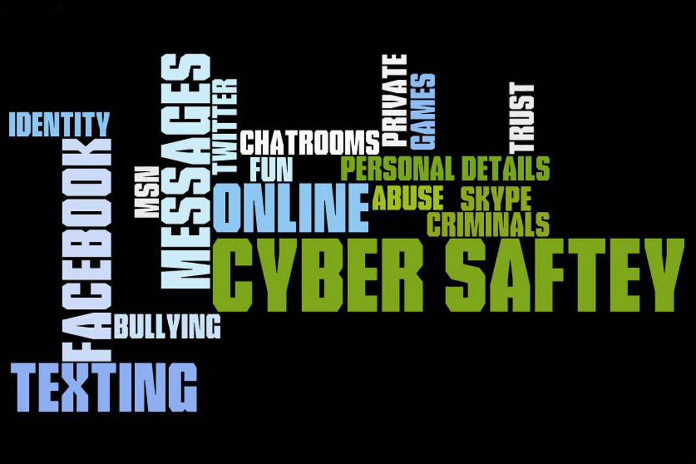
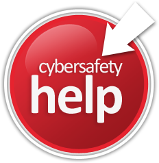
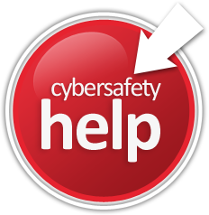

Cyber Safety -:
Surfing Internet has become a part of our lives . Our day consists of many internet related activities like searching
information on the web , communication with friends via e-mail or social networking sites like facebook ,
chatting on yahoo , messanger or Google+ and downloading music and videos . There are people called as
hackers who can take advantage of our online activities to steal our personal information like password of
our e-mails or social networking websites , photographs which we upload on social networking sites , our
debit/credit card number or even data from pen drive .The Internet and mobiles phones provides a great way
to communicate online and express yourself with other , but it is important to make sure they are used responsibly so
that everybody has a secured online experience .
Cyber safety is the safe and responsible use of Information and Communication Techonogies (ICT) on the Internet .


It is important to know the ways in which a hacker can harm you and how to protect yourself from being hacked .
10 Ways in which you can be Hacked :
- Someone can steal password of your e-mail account and send objectionable e-mails from your account to
your friends or other persons .
- Someone can steal password of your social networking account and send objectionable comments to
your friends or uploads unpleasant photographs .
- If you click on a link which is sent by some unknown person through e-mails or in a chat window , a virus
type programs can infect your computer and record all your passwords and steal other information .That information can be
misused and can cause mental stress and monetary loss to you .
- If you do not secure your WiFi modern password , somebody can connect to your internet may stop your
modem so that internet does not work or can even watch your online activities .
- When you go to a cyber cafe or at some public place and use your pen drive . Your pen drive can get copied to the hard
disk of the computer without your knowledge and consent .
- When you Open e-mails account or social networking site on some computer other than yours , that page
could be fake and may be created to record username and password of the user .
- If you are using webcam , that webcam can be hacked and it is possible that somebody can be watching
you through your webcam . Your webcam is taking pictures without your knowledge and those are being
sent to the hacker .
- While using the ATM card , the card data and password could be recorded and cloned .
- While surfing the web , if you think some websites is not safe and carries doubtful contents , don't
open it . Opening such a websites could transfer and install spy software on your computer which in turn can
steal information from your computer .
- If you install a game software which you have got from an unknown sources , you could be installing
the spy software which will take control of your computer to steal your personal information or simply harm
the data in your computer .


10 Steps to Secure Yourself :
If you are a little cautions and take same precautions while doing Internet related activities , you will be safe
and secure from hackers . Steps given below will make sure that you are safe online .
- Before entering username and password in a website to logon ,always check the URL of the websites .
If it is a fake web page it will be showing a different URL .
- E-mails accounts are often broken into , so don't trust them to store your passwords .
- Setup-2 factor authentication , offered by some emails providers like Gmail , to reduce the chance of being
hacked . It will link your g-mail account with mobile and whatever you have to login , it is required along with
the password you enter the verification code sent on your mobile number .
- If you think a website is unsafe , you can check it on the webpage by entering the URL safeweb.norton.web in your
browser's webpage .
- Keep your Broadband connections off when not in use and close the cover of laptop when not in use to avoid
misuse of its webcam .
- Always secure your WiFi modem with password . Also , avoid getting connected to free Internet WiFi
access zones . Open public WiFi networks are notorious for explosing people's personal information to anyone .
- Beware of Card readers at a store or petrol pumps . Use your Debit / Credit card at trusted places only
and also while using on Internet at trusted websites only .
- Try to use an ATM that is inside a bank or guarded 24 hr. by some bank guards . An unattended ATM machine
has high chances of having secret card cloners installed on it .
- Avoid using pen drives with data at computers which you don't trust . If you have to take data there , take
formatted pen drives with only required data in it .
- Finally , always install a legally purchased good antivirus on your computer . It will save you from all spy and
harmful programs .
 

 Cyber Threads
Protection of your Computer
Personal Information
Social Engineering
Cookies
Cyber Threads
Protection of your Computer
Personal Information
Social Engineering
Cookies